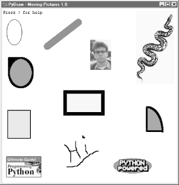
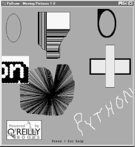

| I l@ve RuBoard |
|
9.6 PyDraw: Painting and Moving GraphicsThe previous chapter introduced simple Tkinter animation techniques (see the tour's canvasDraw variants). The PyDraw program listed here builds upon those ideas to implement a more feature-rich painting program in Python. It adds new trails and scribble drawing modes, object and background color fills, embedded photos, and more. In addition, it implements object movement and animation techniques -- drawn objects may be moved around the canvas by clicking and dragging, and any drawn object can be gradually moved across the screen to a target location clicked with the mouse. 9.6.1 Running PyDrawPyDraw is essentially a Tkinter canvas with lots of keyboard and mouse event bindings to allow users to perform common drawing operations. This isn't a professional-grade paint program by any definition, but it's fun to play with. In fact, you really should -- it is impossible to capture things like object motion in the medium afforded by this book. Start PyDraw from the launcher bars (or run the file movingpics.pyfrom Example 9-18 directly). Press the ? key to view a help message giving available commands (or read the help string in the code listings). Figure 9-17 shows PyDraw after a few objects have been drawn on the canvas. To move any object shown here, either click it with the middle mouse button and drag to move it with the mouse cursor, or middle-click the object and then right-click in the spot you want it to move towards. In the latter case, PyDraw performs an animated (gradual) movement of the object to the target spot. Try this on the picture of Python creator Guido van Rossum near the top to start the famous "Moving Guido Demo" (yes, he has a sense of humor, too). Figure 9-17. PyDraw with draw objects ready to be movedPress "p" to insert photos, and use left-button drags to draw shapes. Windows users -- middle-click is usually both mouse buttons at once, but you may need to configure this in your control panel. In addition to mouse events, there are 17 key-press commands for tailoring sketches that I won't cover here. It takes a while to get the hang of what all the keyboard and mouse commands do; but once you've mastered the bindings, you too can begin generating senseless electronic artwork like that in Figure 9-18. Figure 9-18. PyDraw after substantial play9.6.2 PyDraw Source CodeLike PyEdit, PyDraw lives in a single file. Two extensions that customize motion implementations are listed following the main module shown in Example 9-18. Example 9-18. PP2E\Gui\MovingPics\movingpics.py##############################################################################
# PyDraw: simple canvas paint program and object mover/animator
# uses time.sleep loops to implement object move loops, such that only
# one move can be in progress at once; this is smooth and fast, but see
# the widget.after and thread-based subclasses here for other techniques;
##############################################################################
helpstr = """--PyDraw version 1.0--
Mouse commands:
Left = Set target spot
Left+Move = Draw new object
Double Left = Clear all objects
Right = Move current object
Middle = Select closest object
Middle+Move = Drag current object
Keyboard commands:
w=Pick border width c=Pick color
u=Pick move unit s=Pick move delay
o=Draw ovals r=Draw rectangles
l=Draw lines a=Draw arcs
d=Delete object 1=Raise object
2=Lower object f=Fill object
b=Fill background p=Add photo
z=Save postscript x=Pick pen modes
?=Help other=clear text
"""
import time, sys
from Tkinter import *
from tkFileDialog import *
from tkMessageBox import *
PicDir = '../gifs'
if sys.platform[:3] == 'win':
HelpFont = ('courier', 9, 'normal')
else:
HelpFont = ('courier', 12, 'normal')
pickDelays = [0.01, 0.025, 0.05, 0.10, 0.25, 0.0, 0.001, 0.005]
pickUnits = [1, 2, 4, 6, 8, 10, 12]
pickWidths = [1, 2, 5, 10, 20]
pickFills = [None,'white','blue','red','black','yellow','green','purple']
pickPens = ['elastic', 'scribble', 'trails']
class MovingPics:
def __init__(self, parent=None):
canvas = Canvas(parent, width=500, height=500, bg= 'white')
canvas.pack(expand=YES, fill=BOTH)
canvas.bind('<ButtonPress-1>', self.onStart)
canvas.bind('<B1-Motion>', self.onGrow)
canvas.bind('<Double-1>', self.onClear)
canvas.bind('<ButtonPress-3>', self.onMove)
canvas.bind('<Button-2>', self.onSelect)
canvas.bind('<B2-Motion>', self.onDrag)
parent.bind('<KeyPress>', self.onOptions)
self.createMethod = Canvas.create_oval
self.canvas = canvas
self.moving = []
self.images = []
self.object = None
self.where = None
self.scribbleMode = 0
parent.title('PyDraw - Moving Pictures 1.0')
parent.protocol('WM_DELETE_WINDOW', self.onQuit)
self.realquit = parent.quit
self.textInfo = self.canvas.create_text(
5, 5, anchor=NW,
font=HelpFont,
text='Press ? for help')
def onStart(self, event):
self.where = event
self.object = None
def onGrow(self, event):
canvas = event.widget
if self.object and pickPens[0] == 'elastic':
canvas.delete(self.object)
self.object = self.createMethod(canvas,
self.where.x, self.where.y, # start
event.x, event.y, # stop
fill=pickFills[0], width=pickWidths[0])
if pickPens[0] == 'scribble':
self.where = event # from here next time
def onClear(self, event):
if self.moving: return # ok if moving but confusing
event.widget.delete('all') # use all tag
self.images = []
self.textInfo = self.canvas.create_text(
5, 5, anchor=NW,
font=HelpFont,
text='Press ? for help')
def plotMoves(self, event):
diffX = event.x - self.where.x # plan animated moves
diffY = event.y - self.where.y # horizontal then vertical
reptX = abs(diffX) / pickUnits[0] # incr per move, number moves
reptY = abs(diffY) / pickUnits[0] # from last to event click
incrX = pickUnits[0] * ((diffX > 0) or -1)
incrY = pickUnits[0] * ((diffY > 0) or -1)
return incrX, reptX, incrY, reptY
def onMove(self, event):
traceEvent('onMove', event, 0) # move current object to click
object = self.object # ignore some ops during mv
if object and object not in self.moving:
msecs = int(pickDelays[0] * 1000)
parms = 'Delay=%d msec, Units=%d' % (msecs, pickUnits[0])
self.setTextInfo(parms)
self.moving.append(object)
canvas = event.widget
incrX, reptX, incrY, reptY = self.plotMoves(event)
for i in range(reptX):
canvas.move(object, incrX, 0)
canvas.update( )
time.sleep(pickDelays[0])
for i in range(reptY):
canvas.move(object, 0, incrY)
canvas.update( ) # update runs other ops
time.sleep(pickDelays[0]) # sleep until next move
self.moving.remove(object)
if self.object == object: self.where = event
def onSelect(self, event):
self.where = event
self.object = self.canvas.find_closest(event.x, event.y)[0] # tuple
def onDrag(self, event):
diffX = event.x - self.where.x # ok if object in moving
diffY = event.y - self.where.y # throws it off course
self.canvas.move(self.object, diffX, diffY)
self.where = event
def onOptions(self, event):
keymap = {
'w': lambda self: self.changeOption(pickWidths, 'Pen Width'),
'c': lambda self: self.changeOption(pickFills, 'Color'),
'u': lambda self: self.changeOption(pickUnits, 'Move Unit'),
's': lambda self: self.changeOption(pickDelays, 'Move Delay'),
'x': lambda self: self.changeOption(pickPens, 'Pen Mode'),
'o': lambda self: self.changeDraw(Canvas.create_oval, 'Oval'),
'r': lambda self: self.changeDraw(Canvas.create_rectangle, 'Rect'),
'l': lambda self: self.changeDraw(Canvas.create_line, 'Line'),
'a': lambda self: self.changeDraw(Canvas.create_arc, 'Arc'),
'd': MovingPics.deleteObject,
'1': MovingPics.raiseObject,
'2': MovingPics.lowerObject, # if only 1 call pattern
'f': MovingPics.fillObject, # use unbound method objects
'b': MovingPics.fillBackground, # else lambda passed self
'p': MovingPics.addPhotoItem,
'z': MovingPics.savePostscript,
'?': MovingPics.help}
try:
keymap[event.char](self)
except KeyError:
self.setTextInfo('Press ? for help')
def changeDraw(self, method, name):
self.createMethod = method # unbound Canvas method
self.setTextInfo('Draw Object=' + name)
def changeOption(self, list, name):
list.append(list[0])
del list[0]
self.setTextInfo('%s=%s' % (name, list[0]))
def deleteObject(self):
if self.object != self.textInfo: # ok if object in moving
self.canvas.delete(self.object) # erases but move goes on
self.object = None
def raiseObject(self):
if self.object: # ok if moving
self.canvas.tkraise(self.object) # raises while moving
def lowerObject(self):
if self.object:
self.canvas.lower(self.object)
def fillObject(self):
if self.object:
type = self.canvas.type(self.object)
if type == 'image':
pass
elif type == 'text':
self.canvas.itemconfig(self.object, fill=pickFills[0])
else:
self.canvas.itemconfig(self.object,
fill=pickFills[0], width=pickWidths[0])
def fillBackground(self):
self.canvas.config(bg=pickFills[0])
def addPhotoItem(self):
if not self.where: return
filetypes=[('Gif files', '.gif'), ('All files', '*')]
file = askopenfilename(initialdir=PicDir, filetypes=filetypes)
if file:
image = PhotoImage(file=file) # load image
self.images.append(image) # keep reference
self.object = self.canvas.create_image( # add to canvas
self.where.x, self.where.y, # at last spot
image=image, anchor=NW)
def savePostscript(self):
file = asksaveasfilename( )
if file:
self.canvas.postscript(file=file) # save canvas to file
def help(self):
self.setTextInfo(helpstr)
#showinfo('PyDraw', helpstr)
def setTextInfo(self, text):
self.canvas.dchars(self.textInfo, 0, END)
self.canvas.insert(self.textInfo, 0, text)
self.canvas.tkraise(self.textInfo)
def onQuit(self):
if self.moving:
self.setTextInfo("Can't quit while move in progress")
else:
self.realquit( ) # std wm delete: err msg if move in progress
def traceEvent(label, event, fullTrace=1):
print label
if fullTrace:
for key in dir(event): print key, '=>', getattr(event, key)
if __name__ == '__main__':
from sys import argv # when this file is executed
if len(argv) == 2: PicDir = argv[1] # '..' fails if run elsewhere
root = Tk( ) # make, run a MovingPics object
MovingPics(root)
root.mainloop( )
Just as in the last chapter's canvasDraw examples, we can add support for moving more than one object at the same time with either after scheduled-callback events, or threads. Example 9-19 shows a MovingPics subclass that codes the necessary customizations to do parallel moves with after events. Run this file directly to see the difference; I could try to capture the notion of multiple objects in motion with a screen shot, but would almost certainly fail. Example 9-19. PP2E\Gui\MovingPics\movingpics_after.py##############################################################################
# PyDraw-after: simple canvas paint program and object mover/animator
# use widget.after scheduled events to implement object move loops, such
# that more than one can be in motion at once without having to use threads;
# this does moves in parallel, but seems to be slower than time.sleep version;
# see also canvasDraw in Tour: builds and passes the incX/incY list at once:
# here, would be allmoves = ([(incrX, 0)] * reptX) + ([(0, incrY)] * reptY)
##############################################################################
from movingpics import *
class MovingPicsAfter(MovingPics):
def doMoves(self, delay, objectId, incrX, reptX, incrY, reptY):
if reptX:
self.canvas.move(objectId, incrX, 0)
reptX = reptX - 1
else:
self.canvas.move(objectId, 0, incrY)
reptY = reptY - 1
if not (reptX or reptY):
self.moving.remove(objectId)
else:
self.canvas.after(delay,
self.doMoves, delay, objectId, incrX, reptX, incrY, reptY)
def onMove(self, event):
traceEvent('onMove', event, 0)
object = self.object # move cur obj to click spot
if object:
msecs = int(pickDelays[0] * 1000)
parms = 'Delay=%d msec, Units=%d' % (msecs, pickUnits[0])
self.setTextInfo(parms)
self.moving.append(object)
incrX, reptX, incrY, reptY = self.plotMoves(event)
self.doMoves(msecs, object, incrX, reptX, incrY, reptY)
self.where = event
if __name__ == '__main__':
from sys import argv # when this file is executed
if len(argv) == 2:
import movingpics # not this module's global
movingpics.PicDir = argv[1] # and from* doesn't link names
root = Tk( )
MovingPicsAfter(root)
root.mainloop( )
Now, while one or more moves are in progress, you can start another by middle-clicking on another object and right-clicking on the spot you want it to move to. It starts its journey immediately, even if other objects are in motion. Each object's scheduled after events are added to the same event loop queue and dispatched by Tkinter as soon as possible after a timer expiration. If you run this subclass module directly, you'll probably notice that movement isn't quite as fast or as smooth as in the original, but multiple moves can overlap in time. Example 9-20 shows how to achieve such parallelism with threads. This process works, but as we learned in the last chapter, updating GUIs in spawned threads is generally a dangerous affair. On my machine, the movement that this script implements with threads is a bit more jerky than the original version -- a reflection of the overhead incurred for switching the interpreter (and CPU) between multiple threads. Example 9-20. PP2E\Gui\MovingPics\movingpics_threads.py###################################################################
# use threads to move objects; seems to work on Windows provided
# that canvas.update( ) not called by threads(else exits with fatal
# errors, some objs start moving immediately after drawn, etc.);
# at least some canvas method calls must be thread safe in Tkinter;
# this is less smooth than time.sleep, and is dangerous in general:
# threads are best coded to update global vars, not change GUI;
###################################################################
import thread, time, sys, random
from Tkinter import Tk, mainloop
from movingpics import MovingPics, pickUnits, pickDelays
class MovingPicsThreaded(MovingPics):
def __init__(self, parent=None):
MovingPics.__init__(self, parent)
self.mutex = thread.allocate_lock( )
import sys
#sys.setcheckinterval(0) # switch after each vm op- doesn't help
def onMove(self, event):
object = self.object
if object and object not in self.moving:
msecs = int(pickDelays[0] * 1000)
parms = 'Delay=%d msec, Units=%d' % (msecs, pickUnits[0])
self.setTextInfo(parms)
#self.mutex.acquire( )
self.moving.append(object)
#self.mutex.release( )
thread.start_new_thread(self.doMove, (object, event))
def doMove(self, object, event):
canvas = event.widget
incrX, reptX, incrY, reptY = self.plotMoves(event)
for i in range(reptX):
canvas.move(object, incrX, 0)
# canvas.update( )
time.sleep(pickDelays[0]) # this can change
for i in range(reptY):
canvas.move(object, 0, incrY)
# canvas.update( ) # update runs other ops
time.sleep(pickDelays[0]) # sleep until next move
#self.mutex.acquire( )
self.moving.remove(object)
if self.object == object: self.where = event
#self.mutex.release( )
if __name__ == '__main__':
root = Tk( )
MovingPicsThreaded(root)
mainloop( )
|
| I l@ve RuBoard |
|